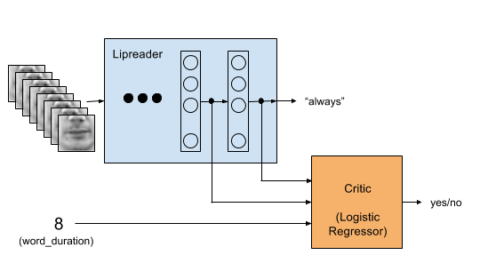
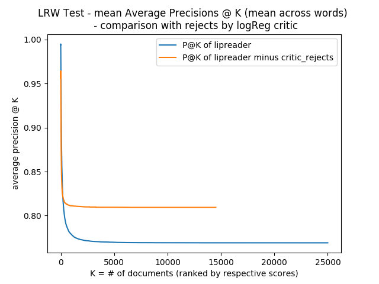
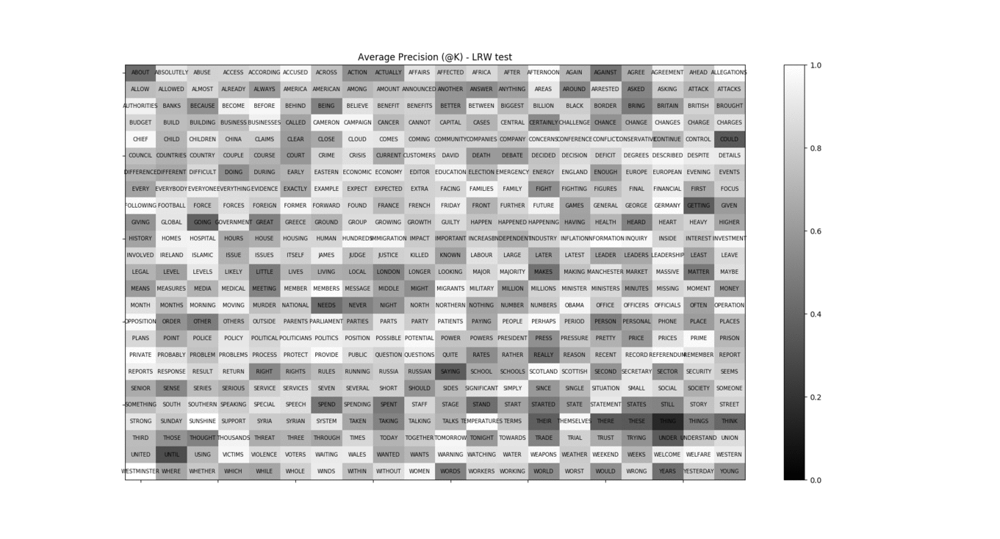

Using lipreader as an information retrieval system

" title="APs_at_K_vs_K_with_logReg_critic_test" />
Figure 1: Average Precisions @ K, taking mean across words, vs K on LRW (test)
" title="AP_at_K_vs_word_gray_test" />
Figure 2: Average Precision for every word (a) using lipreader, (b) using lipreader and rejecting those predicted by critic to be false
AP mean across words: Better AP (m-a-w) for "Lipreader minus critic"
AP vs word: better AP for most words, worse AP for some words
WRONG: don't delete wrong lipreader preds (as told by critic) from the database! They are ground truth.
Extract head pose for LRW (need fusor!)
Better critic with LSTM
Precision @50
mAP?
Nearest neighbour OCR? Majority vote on top-K precisions for recognition
Nearest neighbour OCR for OOV?
ResNet for critic?
Read about Multi-class classification metrics [1-4]
GRIDcorpus:
LRW information retrieval
Updated website: http://preon.iiit.ac.in/~vikramvoleti/weeklyupdates.html
Average Precision @K [5]
Visualized lipreader average precisions @K
Trained Logistic Regression critic with word_durations, lipreader_dense, lipreader_softmax
1) unoptimized, weight-unbalanced, threshold = 0.7 is closer to (0, 1) in ROC
2) unoptimized, weight-balanced, threshold = 0.5 - not much change
Visualized average precisions @K after rejects by critic, compared with lipreader's
Compared mAP@K
[1] Song, Bowen et al. “ROC Operating Point Selection for Classification of Imbalanced Data with Application to Computer-Aided Polyp Detection in CT Colonography.” International journal of computer assisted radiology and surgery 9.1 (2014): 79–89. PMC. Web. 28 Oct. 2017. link
[2] Vincent Van Asch. “Macro- and micro-averaged evaluation measures” link
[3] D. Hand, R. Till. “A Simple Generalisation of the Area Under the ROC Curve for Multiple Class Classification Problems,” Machine Learning, 45, 171–186, 2001link
[4] E. Fieldsend, R. Everson, “Visualisation of multi-class ROC surfaces” link
[5] Average Precision @K link
{kind=link}